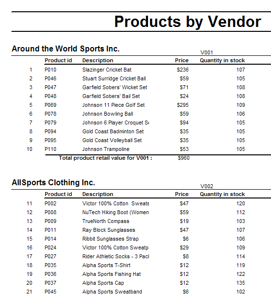
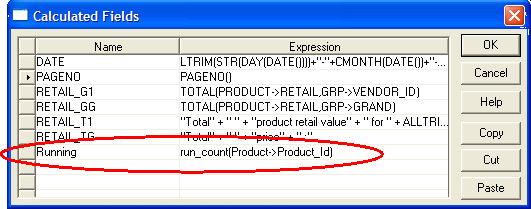
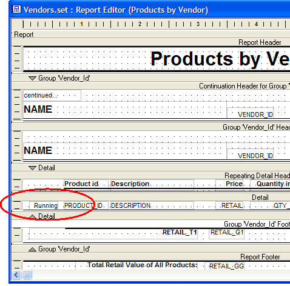

Placing a Running Count on a Report
This procedure explains how to place a running count of items on a report that produces something like the following. Note the sequence of numbers at the left of each Product ID.

Create a calculated field. In this case the name is running. Its expression is run_count(product->product_ID). You could count any item on the Detail section of the report.

Drag the new calculated field from the Drag and Drop list and place it on the report.

See Also
Thanks to
Robert Tishkevich